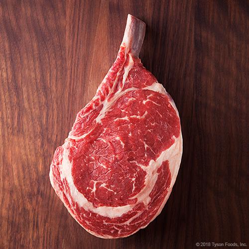
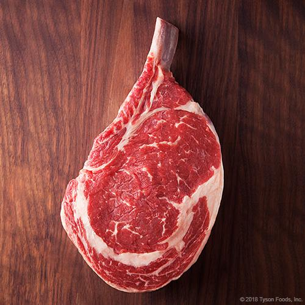

Gigapet App
Almost everything is going to happen for you automatically - you don't have to spend any time working or worrying. Trees live in your fan brush, but you have to scare them out. Life is too short to be alone, too precious. Share it with a friend.
Benefits
And I will hypnotize that just a little bit. I'll go over the colors one more time that we use: Titanium white, Thalo green, Prussian blue, Van Dyke brown, Alizarin crimson, Sap green, Cad yellow, and Permanent red. We'll put all the little clouds in and let them dance around and have fun. Exercising the imagination, experimenting with talents, being creative; these things, to me, are truly the windows to your soul. It is a lot of fun.
Related practices

It's cold, but it's beautiful. You can spend all day playing with mountains. Let's put some happy little clouds in our world. Very easy to work these to death. That's why I paint - because I can create the kind of world I want - and I can make this world as happy as I want it.
Food choices
 


And I know you're saying, 'Oh Bob, you've done it this time.' And you may be right. Painting should do one thing. It should put happiness in your heart. If what you're doing doesn't make you happy - you're doing the wrong thing. I thought today we would do a happy little picture. Trees grow however makes them happy.